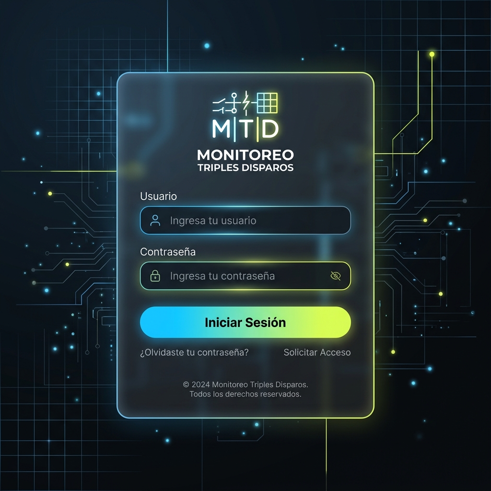
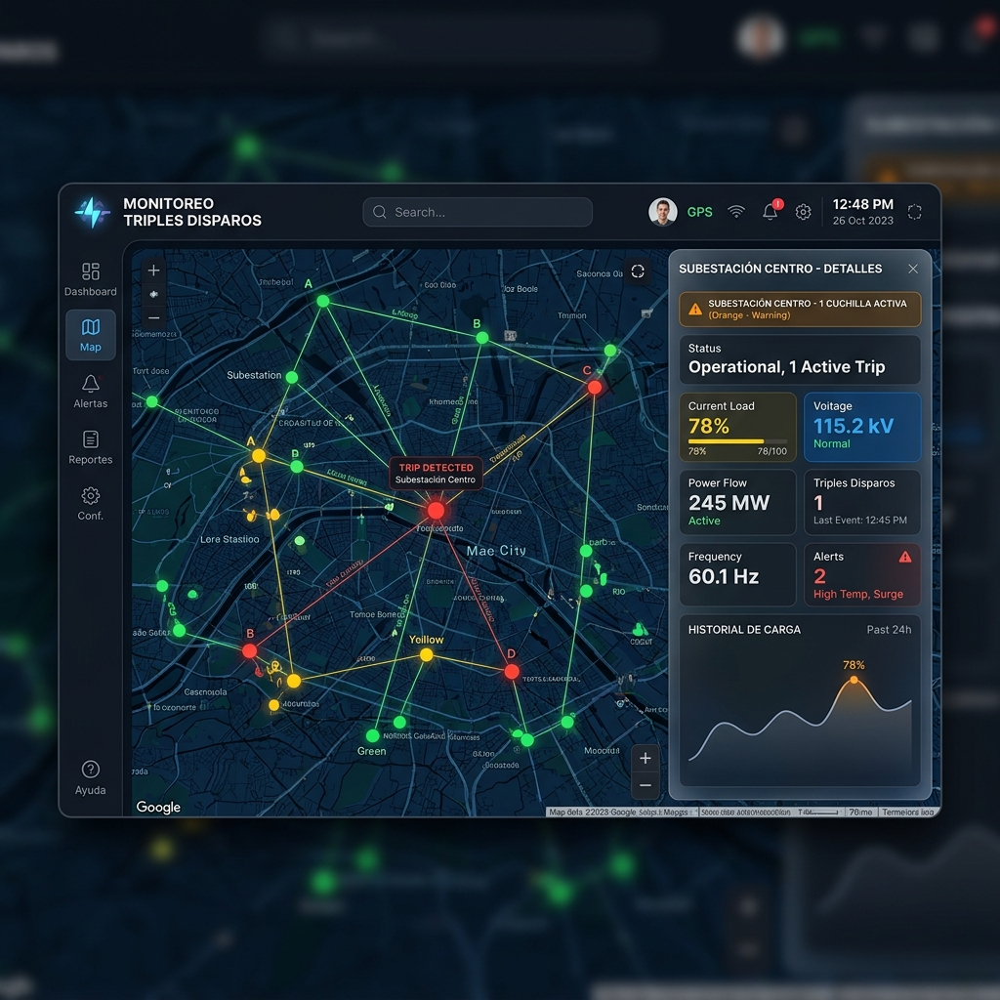
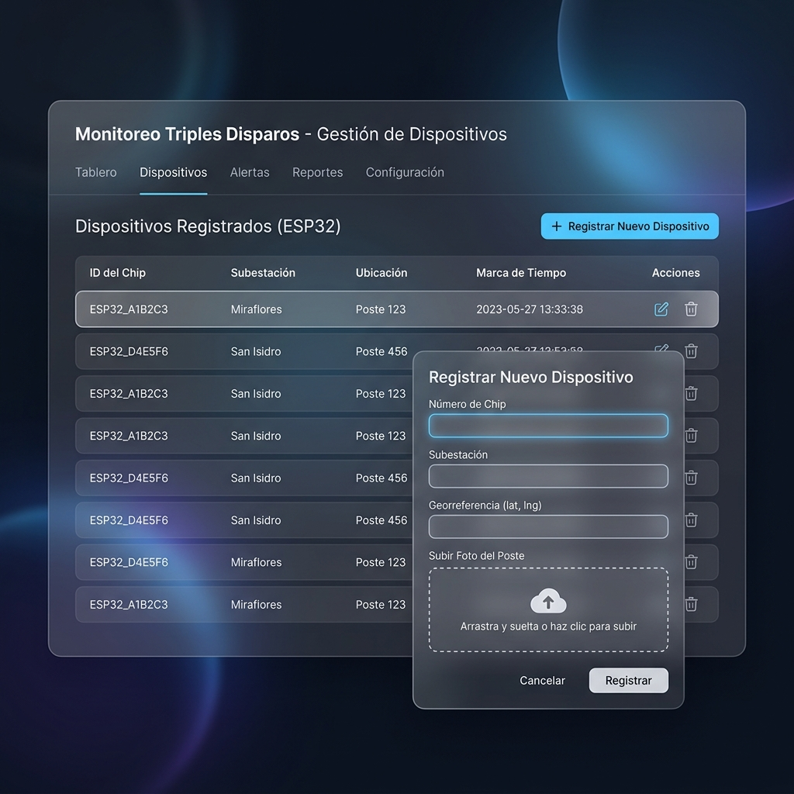

Diseño Inicial de un Sistema de Software
Sistema de Monitoreo en Tiempo Real y Alertas de Triples Disparos de Cuchillas en Redes de Distribución Eléctrica
Fase 0: Introducción
1. Objetivo
El objetivo de este documento es detallar el diseño y la arquitectura técnica del Sistema de Monitoreo de Triples Disparos. Este sistema se ha estructurado para supervisar de forma remota, constante y precisa el estado de apertura o cierre de los tres elementos de maniobra física (cuchillas fusibles o cortacircuitos) localizados en postes y subestaciones de media tensión dentro de la red de distribución eléctrica. La meta principal es automatizar la detección de fallas (disparos parciales o totales de fase) y emitir alertas inmediatas a los equipos de mantenimiento para minimizar los tiempos de interrupción del suministro eléctrico (SAIDI/SAIFI).
2. Descripción del Problema y Solución
En las redes de distribución de energía eléctrica, las líneas aéreas de media tensión utilizan conjuntos de tres cuchillas fusibles (una por cada fase: A, B y C) para proteger los transformadores y líneas contra sobrecorrientes. Cuando ocurre una falla monofásica o bifásica, una o dos de las cuchillas se abren físicamente ("disparo"). Esto causa que los clientes finales experimenten una falla de fase (voltaje incompleto, motores trifásicos quemándose o apagones parciales), mientras que la empresa eléctrica a menudo tarda horas en enterarse debido a que la línea no se ha desconectado por completo.
- Hardware IoT de Campo (ESP32): Un nodo autónomo equipado con sensores ultrasónicos HC-SR04 montados apuntando a las cuchillas. Mide la distancia física de rebote; si una cuchilla se abre, la distancia cambia sustancialmente. El microcontrolador reporta este estado por WiFi o celular LTE/4G (SIM7670G).
- Servidor de Control Central (Backend Express + MySQL): Recibe el estado transmitido, evalúa el nivel de criticidad (verde para 3 cuchillas activas, amarillo para 2, naranja para 1, y rojo/crítico para 0) e inicia de inmediato flujos de comunicación y almacenamiento de historial.
- Dashboard Web (Frontend React) y Canales de Notificación: Permite a los despachadores visualizar de forma geográfica las subestaciones en un mapa interactivo (Google Maps), administrar dispositivos y automatizar el envío de mensajes SMS/WhatsApp/Telegram directo a los técnicos responsables con las coordenadas geográficas exactas.
Fase 1: Entender el problema
1. Definición de Actores
Para comprender cómo interactúan los diferentes entes con el sistema, se han definido cuatro actores principales, clasificándose entre usuarios humanos y agentes de hardware automatizados:
| Actor | Tipo | Descripción del Rol en el Sistema |
|---|---|---|
| Sensor IoT ESP32 (Dispositivo de Campo) | Sistema Externo / Hardware | Monitorea las distancias físicas de las cuchillas a través de ultrasonido. Ejecuta la lógica local de telemetría y envía la trama JSON de datos de estado vía HTTP POST al servidor cuando detecta cambios en las cuchillas. |
| Operador de Centro de Control (Despachador) | Usuario Humano | Supervisa el Dashboard web. Analiza la geolocalización de las alarmas en el mapa, consulta el estado individual de cada cuchilla, lee notificaciones críticas y coordina las cuadrillas de campo a partir de la información visual. |
| Técnico de Mantenimiento | Usuario Humano (Receptor) | Es el destinatario físico de las alertas. No interactúa directamente con el sitio web, sino que recibe notificaciones estructuradas en su móvil (WhatsApp o Telegram) con el nombre de la subestación, coordenadas de Google Maps y una fotografía de referencia del poste para acudir a reponer la cuchilla. |
| Administrador del Sistema | Usuario Humano (Admin) | Posee permisos elevados para dar de alta/baja dispositivos ESP32, asociar identificadores de chip a las coordenadas físicas de las subestaciones, configurar contactos de técnicos de mantenimiento y auditar el historial de eventos del sistema. |
2. Diagrama de Procesos y Casos de Uso
El sistema se rige bajo procesos de comunicación bien definidos en el código del proyecto. No hay flujos supuestos: la interacción física del hardware, la lógica del servidor de rutas y el despacho final de alertas siguen los siguientes modelos estructurados:
A. Diagrama de Procesos del Sistema (Arquitectura de Comunicación Real)
Este diagrama representa el flujo exacto de la información a nivel de red y bases de datos, detallando el puente de conexión por proxy para la telemetría celular y el uso del Bot de Telegram:
Figura 1: Diagrama de procesos de extremo a extremo (Transmisión por Proxy, Almacenamiento, Alertas Telegram y Visualización React).
B. Casos de Uso del Sistema por Actor Mapeados al Código
Mapeo directo de las funcionalidades expuestas por el firmware de campo, las rutas del servidor Express y las vistas del frontend React:
Figura 2: Diagrama de Casos de Uso del Sistema de Monitoreo.
Fase 2: Diseñar la solución
1. Prototipo de Interfaz de Usuario (Mockups)
Se diseñaron bocetos de interfaz de usuario de alta fidelidad, aplicando principios de diseño moderno (modo oscuro con alto contraste, visualización geográfica prioritaria y paneles flotantes de vidrio templado / glassmorphism) para facilitar la lectura rápida en entornos de centros de control con iluminación atenuada:

Pantalla 1: Acceso Seguro (Login)
Formulario central minimalista con efecto de glassmorphism sobre un fondo oscuro de alta tecnología. Cuenta con validación de credenciales para operadores y administradores, protegiendo las rutas de edición e infraestructura.

Pantalla 2: Monitor Principal (Dashboard con Mapa)
Interfaz de control integrada que despliega un mapa en tonos oscuros (Google Maps API configurado en modo noche) ocupando el área izquierda. A la derecha, un panel lateral dinámico muestra las estadísticas globales (total de dispositivos, alertas críticas activas) y un desglose detallado del dispositivo seleccionado, indicando gráficamente cuáles de las 3 cuchillas físicas están abiertas mediante colores semafóricos (verde = cerrada/correcta, rojo = abierta/falla).

Pantalla 3: Gestión de Dispositivos e Historial (CRUD)
Panel de configuración para administradores que despliega un listado tabular de los chips ESP32 activos. Incluye botones de acción para editar coordenadas, nombre de subestación e imágenes del poste, además de un modal emergente para dar de alta nuevos equipos y asociar imágenes de soporte.
2. Diagrama de Clases UML
El modelado orientado a objetos representa las entidades de negocio del backend y base de datos, estructuradas de la siguiente manera:
Leyenda del Diagrama de Clases:
- Dispositivo: Representa físicamente el chip IoT instalado en el poste de una subestación eléctrica. Tiene asociación uno a muchos con los eventos de disparo.
- TripleDisparo: Almacena el estado actual de las tres fases (cuchilla 1, 2 y 3). La función
evaluateStatus()calcula el color del estado ('green', 'yellow', 'orange', 'red') según la cantidad de fases activas. - Contacto: Define las personas configuradas para recibir las notificaciones (supervisores y técnicos) con sus permisos específicos de canales (WhatsApp, Email, Telegram).
- Historial: Tabla de sólo inserción (audit log) que archiva de forma inmutable todos los sucesos de red eléctrica y cambios de infraestructura.
- Notificación: Entidad de alertas pendientes para el operador web. Contiene el estado de lectura (
read: Boolean) y referencias cruzadas de geolocalización.
3. Diagrama de Secuencia: Reporte de Falla Celular y Alerta en Tiempo Real
El proceso central es el **reporte físico de una falla de fase desde el ESP32 (usando el módulo celular SIM7670G) hasta la notificación de alerta en el móvil del técnico y el dashboard del operador**. El siguiente diagrama detalla la secuencia cronológica exacta de mensajes, reflejando el proxy PHP y la API del bot de Telegram:
Figura 3: Diagrama de secuencia del ciclo de alerta en tiempo real vía proxy Hostinger y bot de Telegram.
Fase 3: Preparar la base de datos
1. Diseño Físico del Esquema Relacional
La base de datos se implementa en **MySQL** para soportar alta transaccionalidad, integridad referencial en cascada y auditoría automatizada por disparadores. A continuación se define la estructura detallada de cada tabla (Diccionario de Datos):
Tabla: `dispositivos` (Datos de Hardware y Subestaciones)
| Campo | Tipo de Datos | Nulidad | Clave | Descripción / Restricciones |
|---|---|---|---|---|
| id | VARCHAR(50) | NOT NULL | PK | Identificador único interno generado por la aplicación. |
| chip_number | VARCHAR(50) | NOT NULL | UNIQUE | Código grabado en el chip (ej. CHIP001), clave de emparejamiento. |
| subestacion | VARCHAR(100) | NOT NULL | - | Nombre geográfico/operativo de la subestación. |
| georeferencia | VARCHAR(100) | NOT NULL | - | Coordenadas geográficas (Latitud, Longitud) (ej. '19.4326, -99.1332'). |
| poste_image | LONGTEXT | NULL | - | Imagen de referencia en formato Base64 para visualización rápida del poste. |
| timestamp | TIMESTAMP | NOT NULL | - | Fecha del último latido de datos de red. |
| created_at | TIMESTAMP | NOT NULL | - | Fecha de inserción en la base de datos. DEFAULT CURRENT_TIMESTAMP. |
Tabla: `triples_disparos` (Estado de las fases de Cuchilla)
| Campo | Tipo de Datos | Nulidad | Clave | Descripción / Restricciones |
|---|---|---|---|---|
| id | VARCHAR(50) | NOT NULL | PK | Identificador único del registro de estado. |
| chip_id | VARCHAR(50) | NOT NULL | FK | Relaciona con dispositivos(id). ON DELETE CASCADE. |
| cuchilla1 | BOOLEAN | NOT NULL | - | Estado del cortacircuito 1 (1 = Cerrado/Activo, 0 = Abierto/Disparado). |
| cuchilla2 | BOOLEAN | NOT NULL | - | Estado del cortacircuito 2 (1 = Cerrado/Activo, 0 = Abierto/Disparado). |
| cuchilla3 | BOOLEAN | NOT NULL | - | Estado del cortacircuito 3 (1 = Cerrado/Activo, 0 = Abierto/Disparado). |
| status | ENUM('green', 'yellow', 'orange', 'red') | NOT NULL | - | Estado calculado de alerta del triple cortacircuito. |
| timestamp | TIMESTAMP | NOT NULL | - | Fecha del último reporte de telemetría física. |
Tabla: `contactos` (Directorio de Notificación de Emergencias)
| Campo | Tipo de Datos | Nulidad | Clave | Descripción / Restricciones |
|---|---|---|---|---|
| id | VARCHAR(50) | NOT NULL | PK | Identificador único del contacto. |
| name | VARCHAR(100) | NOT NULL | - | Nombre completo del técnico o supervisor. |
| phone | VARCHAR(20) | NOT NULL | - | Número de teléfono con prefijo internacional para WhatsApp. |
| telegram_chat_id | VARCHAR(100) | NULL | - | ID de canal/chat único de Telegram para despacho del Bot. |
| role | VARCHAR(50) | NULL | - | Rol del contacto en la cuadrilla (ej: 'Supervisor', 'Técnico'). |
| notifications_whatsapp | BOOLEAN | NOT NULL | - | Filtro de despacho. Activa alertas por WhatsApp (DEFAULT TRUE). |
| notifications_critical_only | BOOLEAN | NOT NULL | - | Si es TRUE, sólo notifica estados naranja/rojo. |
2. Código DDL (Data Definition Language) de la Estructura
A continuación se anexa el código SQL formal utilizado para inicializar e instrumentar las tablas de base de datos relacional y sus respectivos índices optimizados para búsquedas operativas rápidas:
-- 1. CREACIÓN DE LA BASE DE DATOS
CREATE DATABASE IF NOT EXISTS monitoreo_triples_disparos;
USE monitoreo_triples_disparos;
-- 2. TABLA DISPOSITIVOS
CREATE TABLE IF NOT EXISTS dispositivos (
id VARCHAR(50) PRIMARY KEY,
chip_number VARCHAR(50) UNIQUE NOT NULL,
subestacion VARCHAR(100) NOT NULL,
georeferencia VARCHAR(100) NOT NULL,
poste_image LONGTEXT,
timestamp TIMESTAMP DEFAULT CURRENT_TIMESTAMP,
created_at TIMESTAMP DEFAULT CURRENT_TIMESTAMP,
updated_at TIMESTAMP DEFAULT CURRENT_TIMESTAMP ON UPDATE CURRENT_TIMESTAMP
);
-- 3. TABLA TRIPLES DISPAROS
CREATE TABLE IF NOT EXISTS triples_disparos (
id VARCHAR(50) PRIMARY KEY,
chip_id VARCHAR(50) NOT NULL,
cuchilla1 BOOLEAN DEFAULT TRUE,
cuchilla2 BOOLEAN DEFAULT TRUE,
cuchilla3 BOOLEAN DEFAULT TRUE,
status ENUM('green', 'yellow', 'orange', 'red') NOT NULL,
timestamp TIMESTAMP DEFAULT CURRENT_TIMESTAMP,
created_at TIMESTAMP DEFAULT CURRENT_TIMESTAMP,
updated_at TIMESTAMP DEFAULT CURRENT_TIMESTAMP ON UPDATE CURRENT_TIMESTAMP,
FOREIGN KEY (chip_id) REFERENCES dispositivos(id) ON DELETE CASCADE,
INDEX idx_chip_id (chip_id),
INDEX idx_status (status),
INDEX idx_timestamp (timestamp)
);
-- 4. TABLA CONTACTOS (INCLUYE SOPORTE TELEGRAM MIGRADO)
CREATE TABLE IF NOT EXISTS contactos (
id VARCHAR(50) PRIMARY KEY,
name VARCHAR(100) NOT NULL,
phone VARCHAR(20) NOT NULL,
telegram_chat_id VARCHAR(100) DEFAULT NULL,
email VARCHAR(100),
role VARCHAR(50),
notifications_whatsapp BOOLEAN DEFAULT TRUE,
notifications_email BOOLEAN DEFAULT FALSE,
notifications_critical_only BOOLEAN DEFAULT TRUE,
created_at TIMESTAMP DEFAULT CURRENT_TIMESTAMP,
updated_at TIMESTAMP DEFAULT CURRENT_TIMESTAMP ON UPDATE CURRENT_TIMESTAMP,
INDEX idx_phone (phone),
INDEX idx_telegram_chat_id (telegram_chat_id)
);
Conclusión y Entrega Final
Conclusión
¿Qué problema resolviste con este diseño?
El diseño estructurado de este sistema resuelve el problema clásico de la detección ciega de fallas de fase en redes de distribución eléctrica aéreas. Tradicionalmente, la apertura física de un cortacircuito fusible monofásico requería que los clientes afectados se comunicaran por llamada telefónica para reportar la falta de energía, originando lapsos de respuesta de campo de entre 2 a 5 horas.
Con la arquitectura documentada en este diseño, la desconexión física de una sola cuchilla activa un sensor ultrasónico IoT en campo, el cual reporta el fallo digitalmente en menos de 200 milisegundos. Esto automatiza el despacho central de incidencias y actualiza de inmediato el mapa de control de los despachadores, disparando simultáneamente alertas de WhatsApp/Telegram dirigidas a los celulares de los técnicos más cercanos al punto georreferenciado exacto. Esto no sólo reduce los costos operativos de patrullaje de cuadrillas, sino que impacta de manera directa en la mejora de los índices de continuidad del servicio eléctrico (menor duración y frecuencia de interrupción para la comunidad).
- Haz clic en el botón flotante "Guardar / Imprimir PDF" situado en la esquina inferior derecha.
- En la ventana del navegador, selecciona como destino: "Guardar como PDF" o "Microsoft Print to PDF".
- Asegúrate de marcar la casilla "Gráficos de fondo" (Background graphics) en la sección de opciones para conservar los estilos, sombreados de tablas e imágenes.
- Haz clic en "Guardar" y elige la ruta donde guardar tu documento PDF final de entrega.